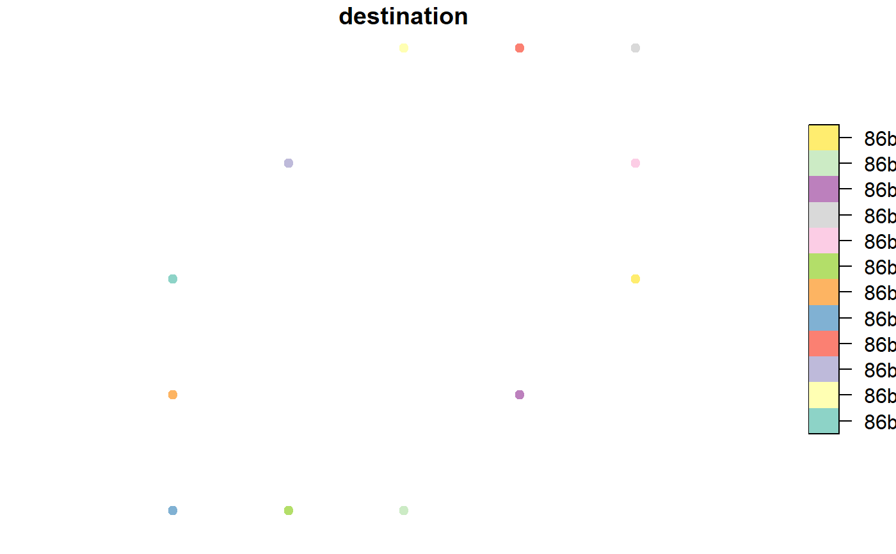

get_local_ij.RdThis function defines local i, j coordinates for an H3 destination cell relative to an H3 origin cell.
get_local_ij(origin = NULL, destination = NULL, simple = TRUE)
| origin | Character; 15-character cell index generated by H3. A vector of indexes can also be supplied. |
|---|---|
| destination | Character; 15-character cell index generated by H3. A vector of indexes can also be supplied. |
| simple | Logical; whether to include an unprojected sfc_POINT geometry column in the output object. |
If `simple = TRUE`, a matrix where each row contains the local i, j coordinates for the supplied destination indexes. If not, an `sf` object with origin and destination attributes, point geometry of the destination cell centers, and an undefined coordinate reference system.
The number of indexes supplied to origin and destination must be equal.
The coordinate space used by this function may have deleted regions or warping due to pentagonal distortion.
Coordinates are only comparable if they come from the same origin index.
Failure may occur if the index is too far away from the origin or if the index is on the other side of a pentagon.
This function is experimental, and its output is not guaranteed to be compatible across different versions of H3.
# Get local coordinates for a nearby cell get_local_ij(origin = '86be8d12fffffff', destination = '86be8d127ffffff')#> i j #> 1 -87 36# Get local coordinates for a donut of nearby cells destinations <- get_ring(h3_address = '86be8d12fffffff', ring_size = 2) local_coords <- get_local_ij(origin = rep('86be8d12fffffff', length(destinations[[1]])), destination = destinations[[1]], simple = FALSE) plot(local_coords['destination'], pch = 19) # note origin is (0,0)